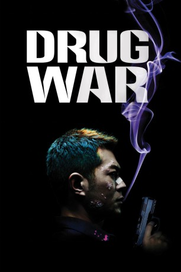

#3070 Drug War
 gesehen am 22.01.2016
gesehen am 22.01.2016
 
 IMDB-Wertung: 7.0 / 10
IMDB-Wertung: 7.0 / 10  Metascore: 86
Metascore: 86 
Die Volksrepublik China zeigt kein Erbarmen mit Drogenhändlern. Weshalb auch Kokaindealer Timmy Choi die Todesstrafe droht, nachdem ihn das Team des unerbittlichen Ermittlers Zhang verhaftet hat. Chois einzige Chance: Er muss mit den Behörden kooperieren und seine Geschäftspartner ans Messer liefern. Doch je tiefer sich die Einheit von Zhang in den Drogensumpf begibt, umso drängender wird die Frage, ob sie Choi trauen können …
Jahr: 2012
Dauer: 106 Minuten
FSK: 16
Land: China Studio: Koch MediaTonspuren:
Untertitel:
Auflösung: 1080p (1920x816) Größe: 5806 MB
Genre: Action, Thriller, Drama, Krimi
Regisseur: Johnnie To
Drehbuch: Ka-Fai Wai, Nai-Hoi Yau, Ryker Chan, Xi Yu
Soundtrack: Xavier Jamaux
Darsteller:
 Louis Koo als Timmy Choi Tin-ming
Louis Koo als Timmy Choi Tin-ming Siu-Fai Cheung als Su
Siu-Fai Cheung als Su Ka Tung Lam als East Lee
Ka Tung Lam als East Lee Honglei Sun als Zhang Lei
Honglei Sun als Zhang Lei- Yi Huang als Yang Xiaobei
- Yunxiang Gao als Xu Guoxiang
 Suet Lam als Fatso
Suet Lam als Fatso- Wallace Chung als Guo Weijun
- Tao Guo als Senior Dumb
 Michelle Ye als Sal
Michelle Ye als Sal Philip Keung als Darkie
Philip Keung als Darkie- Taishen Cheng als Captain Liu, Erzhou
- Hoi-Pang Lo als Birdie
- Guangjie Li als Chen Shixiong
- Yin Zhusheng als Snake Head
- Xin Gao als Driver
- Ting Yip Ng als Hatred
- Xiao Cong als Driver
- Gan Tingting als Haha's Wife
- Li Jing als Junior Dumb
- Gang Yao als Captain Ding
- Tan Kai als Li Shuchang
- Meng Rui als Jinhai Anti-Drug Squad Member
- Yi Lin als Junior Dumb's Wife
- Chan Siu Hei als Jinhai Anti-Drug Squad Member
- Qin Shiyue als Jinhai Anti-Drug Squad Member
- Boyang Wang als The Dumb Brothers' Follower
- Yang Yi als Jinhai Anti-Drug Squad Member
- Wang Zixuan als Ming's Wife
- Qianqian Tong als Jinhai Anti-Drug Squad Member
- Yang Xue als Jinhai Anti-Drug Squad Member
- Ma Jun als Captain Yu, Jinhai Coast Guard
- Hao Ping als Bro Haha
- Zhigang Guo als Ming's Senior Bro-in-Law
- Li Zhenqi als Uncle Bill
- Zhu Honglin als The Dumb Brothers' Follower
- Liu Qi als Jinhai Anti-Drug Squad Member
- Ip Kwop Kin als Jinhai Anti-Drug Squad Member
- Changyi Jiang als Jinhai Anti-Drug Squad Chief Commander
- Lin Xu als Jinhai Anti-Drug Squad Member
- Fan Min als Jinhai Anti-Drug Squad Member
- Yan Ren als Ming's Senior Bro-in-Law
- Qin Bokun als Jinhai Anti-Drug Squad Member
- Wang Yang als Jinhai Anti-Drug Squad Member
- He Tianyang als Jinhai Anti-Drug Squad Member
- Zi Yi als Lin
- Zhao Xin als Jinhai Anti-Drug Squad Member
- Zho Yubo als Jinhai Anti-Drug Squad Member
- Zheng Wanqiu als Senior Dumb's Wife
- Wang Siya als Jinhai Anti-Drug Squad Member
Datei: X:\HD-Eastern-Modern(A-M)\Drug War (2012, FSK16, 1920x816).mkv seit 20.01.2016
Festplatte: HD Eastern+Western
 Es gibt insgesamt 104 Filme in der Gruppe 'HD-Eastern-Modern(A-M)'
Es gibt insgesamt 104 Filme in der Gruppe 'HD-Eastern-Modern(A-M)'